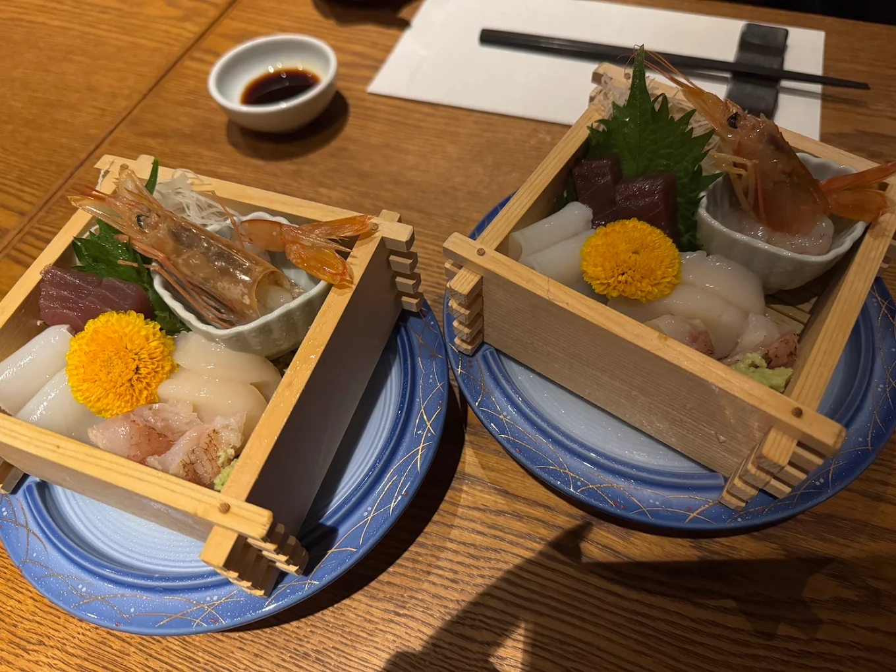
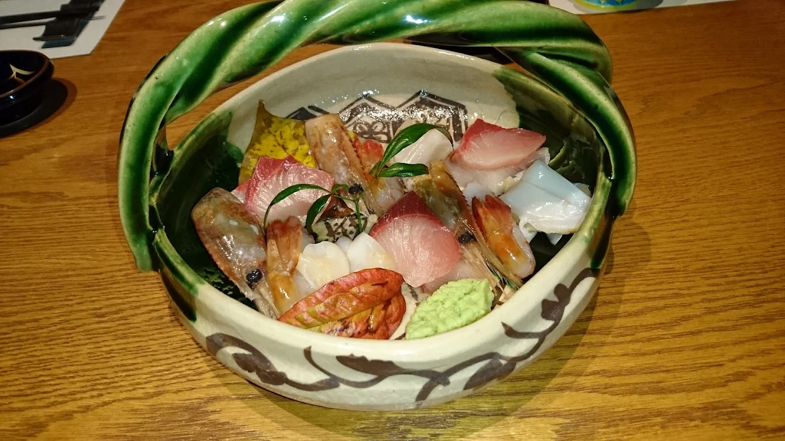
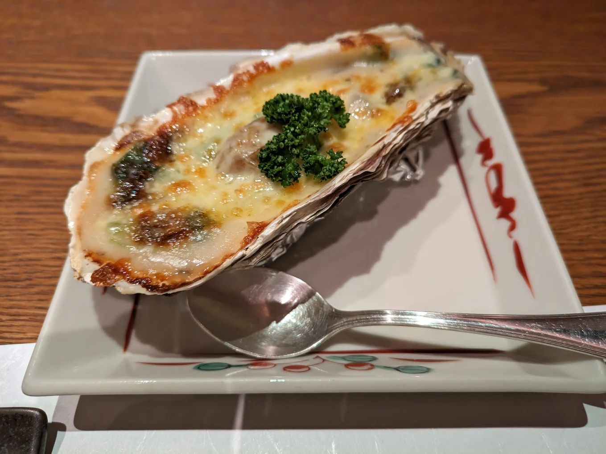

「WASHOKU 和 なごみ」
名古屋市中区丸の内
桜通線・名城線-久屋大通駅から徒歩6分



Googleマップの評価「星３.８」
落ち着いた雰囲気で個室もある創作料理の居酒屋
質の良い和食が食べられる居酒屋で、店内の雰囲気や清潔感はかなり好印象。
コース料理を頼んだが盛り付けも味もかなり良い。店内の雰囲気も相まって高そうな雰囲気があるが、比較的標準的な値段設定で、居酒屋チェーン店よりは値が張るものの丸の内や錦の高級店ほど高くはない。
店のある丸の内という地域的にも、店構えも内装もしっかりとした店の雰囲気があるので接待や大切な人との会食でも見劣りしない良い店である。
「店舗所在地」
| 住所 | 〒460-0002 愛知県名古屋市中区丸の内３丁目１０−１２ ＧＫレジデンス 1F |
|---|---|
| TEL | 052-959-2066 |
| URL | hotpepper.jp |